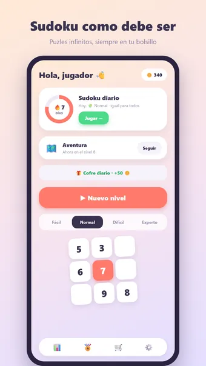
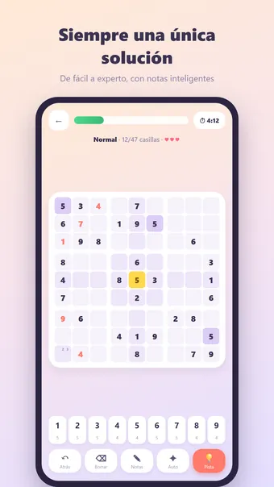
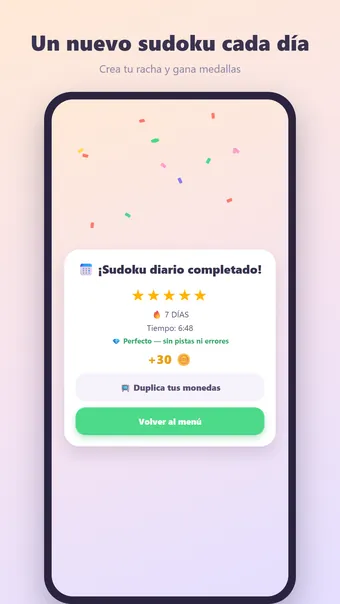

Sobre Sudoku
Juega al Sudoku, el clásico rompecabezas de números — donde quieras y sin conexión. ¡Rellena la cuadrícula para que cada cifra del 1 al 9 aparezca exactamente una vez en cada fila, columna y caja de 3×3!
Cómo se juega
Cada sudoku se genera al momento y tiene garantizada una única solución. Toca una casilla, elige una cifra y usa las notas a lápiz para los candidatos. Los errores se ven al instante; con tres errores termina la partida.
Cuatro niveles de dificultad
- Fácil: muchas cifras ya colocadas, ideal para un descanso
- Normal: el clásico del periódico
- Difícil: para quien ya domina el juego
- Experto: ayuda mínima — para el auténtico puzlista
Modo aventura
Supera cientos de niveles numerados cada vez más difíciles. Viaja por mundos llenos de color, gana una medalla en cada nivel y consigue recompensas por hitos.
Sudoku diario
Cada día un sudoku único, el mismo para todos. Gana una medalla de 1 a 5 estrellas y construye una racha: ¡3, 7, 30 o incluso 100 días seguidos!
Monedas y temas
Gana monedas con cada sudoku completado y gástalas en pistas o nuevos estilos: Bosque, Espacio, Neón, Madera, Mármol, Navidad y Halloween. Solo cosmético — sin pay-to-win.
Y además
- Pistas con monedas
- Notas inteligentes que se limpian solas
- 23 logros, desde tu primer sudoku hasta cien días seguidos
- Estadísticas detalladas: mejor tiempo, sudokus sin errores y más
- Modo zen: oculta el cronómetro y resuelve a tu ritmo
- Sonido y vibración (desactivables en los ajustes)
- Disponible en español, inglés, neerlandés, alemán, francés y portugués
Gratis. La app muestra anuncios, que puedes quitar con una compra opcional; no necesitas cuenta.
Preguntas frecuentes
¿Sudoku es gratis?
Sí. Sudoku se descarga y se juega gratis. La app muestra anuncios, que puedes quitar con una compra opcional dentro de la app.
¿Sudoku funciona sin conexión?
Sí. Sudoku funciona sin conexión a internet, así que puedes jugar en el avión, en el tren o en cualquier sitio sin wifi.
¿Necesito una cuenta para jugar a Sudoku?
No. No hay que registrarse ni iniciar sesión: abre la app y juega. Tus partidas y ajustes se quedan en tu propio dispositivo.
¿Cómo se juega a Sudoku?
Cada sudoku se genera al momento y tiene garantizada una única solución. Toca una casilla, elige una cifra y usa las notas a lápiz para los candidatos. Los errores se ven al instante; con tres errores termina la partida.
¿Hay un reto nuevo cada día?
Cada día un sudoku único, el mismo para todos. Gana una medalla de 1 a 5 estrellas y construye una racha: ¡3, 7, 30 o incluso 100 días seguidos!
¿Dónde puedo descargar Sudoku?
Sudoku está disponible para móviles y tabletas Android en Google Play. Usa el botón de la parte superior de esta página.
Otros juegos que te pueden gustar
Nonogram
El nonogram clásico. Puzles infinitos y un reto nuevo cada día.
Google PlayBuscaminas
El buscaminas clásico. Campos de minas infinitos y un reto nuevo cada día.
Google PlayPuzle de bloques
Rellena el tablero por completo. Siempre resoluble, un reto nuevo cada día.
Google PlayInformación legal
Aquí encontrarás los documentos legales que se aplican a Sudoku.
Contacto
¿Preguntas, comentarios o una solicitud de privacidad? Escribe a joostmuijsenberg.dev@gmail.com.